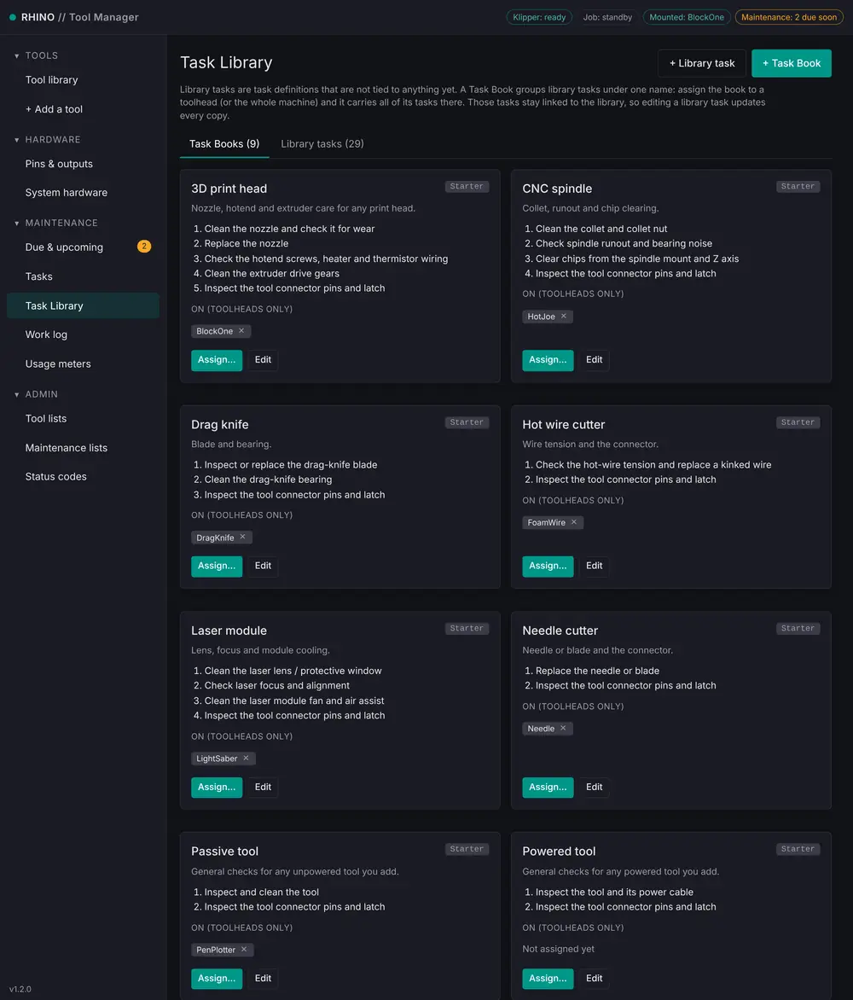
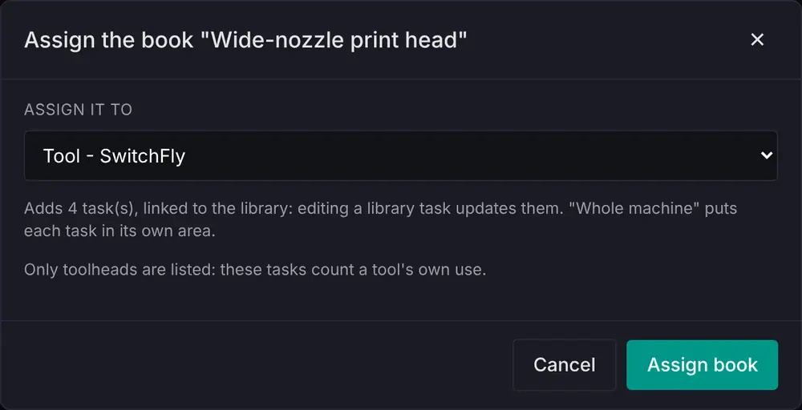
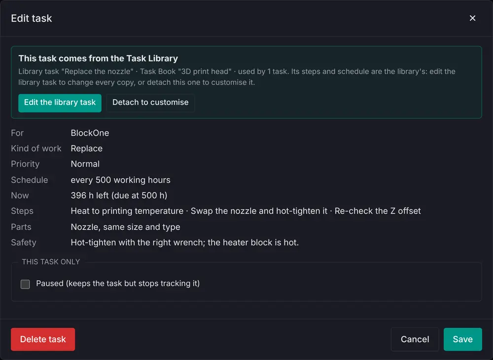
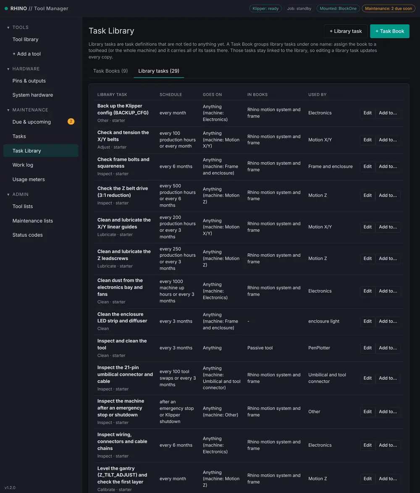
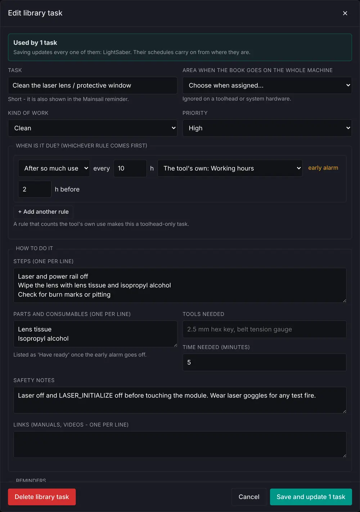
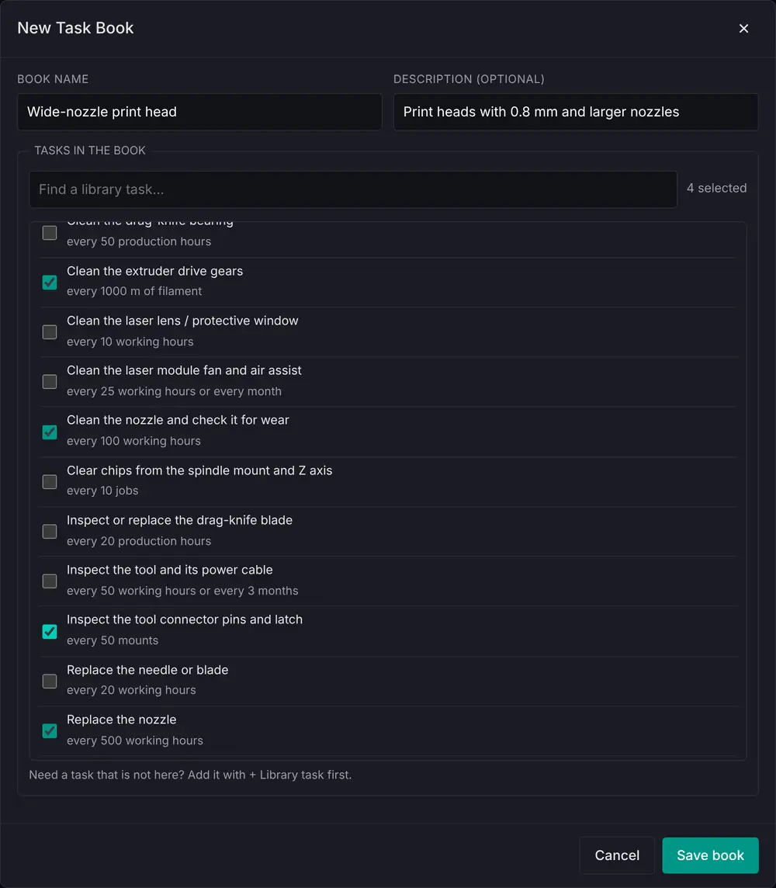

The Task Library holds task definitions that are not tied to anything yet – the starter tasks for the Rhino and each kind of tool, and any you add. A Task Book is a named group of library tasks. Assign a book to a toolhead, a piece of system hardware or the whole machine, and it carries all of its tasks there.
The Task Books tab shows each book, its tasks and where it is assigned. Assign... puts it on something more; the × on an assignment takes it off, which archives the tasks it added there (their work log is kept). Books whose tasks count a tool's own use, such as working hours, can only go on toolheads.

Assign... asks where. Whole machine puts each task in its own machine area (belts in Motion X/Y, leadscrews in Motion Z...). Assigning a book twice adds nothing twice.

Tasks that come from the library stay linked to it. Their steps and schedule are the library's, so Details on a linked task shows them read-only with two choices: Edit the library task, which changes every copy at once, or Detach to customise, which turns this one task into an ordinary task you can edit on its own. Pausing a linked task affects only that task. Each copy keeps its own schedule: when it was last done, its readings and its status.

The Library tasks tab lists every library task: its schedule, what it can go on, the books it is in and the tasks made from it. Edit opens the editor; saving says how many linked tasks it updates. Add to... puts one library task on something without a book. + Library task adds your own; its Area when the book goes on the whole machine decides where it lands with Whole machine. Deleting a library task keeps the tasks made from it as ordinary tasks.

Editing a library task: the box at the top lists the tasks it will update.

+ Task Book makes a book: a name, an optional description and the library tasks in it, found with the search box. Tasks you add to a book that is already assigned are added there too; tasks you take out are archived there.
